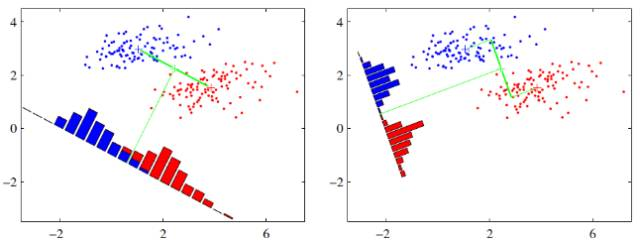
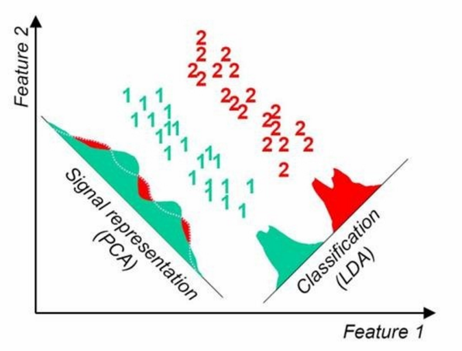
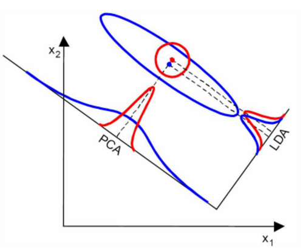
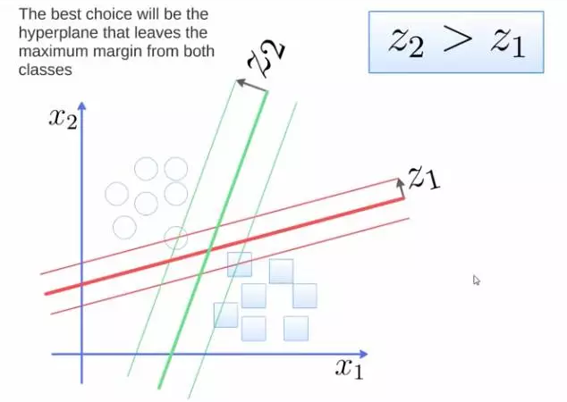
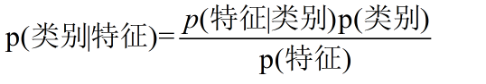
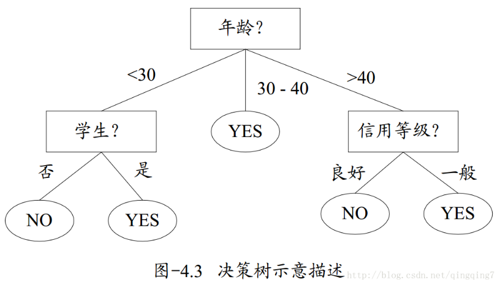
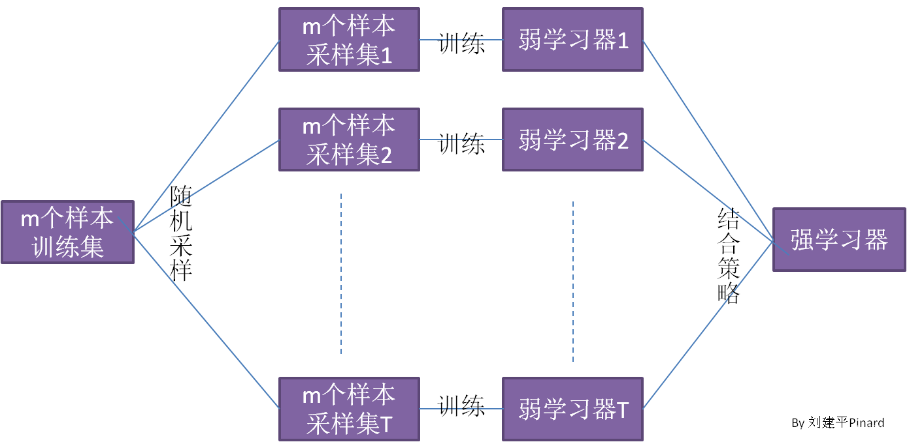
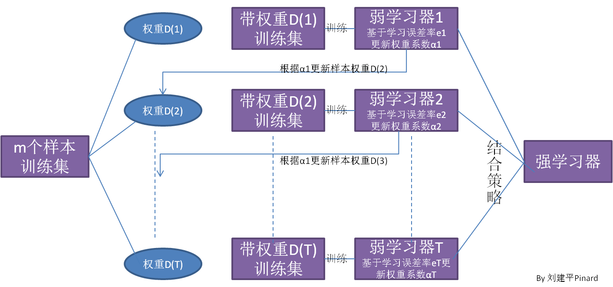

分类的目的是为了确定一个点的类别，具体有哪些类别是已知的。
线性判别分析（LDA）
LDA的思想可以用一句话概括，就是“投影后类内方差最小，类间方差最大”。
假设有两类数据，分别为红色和蓝色，如下图所示，这些数据特征是二维的，希望将这些数据投影到一维的一条直线，让每一种类别数据的投影点尽可能的接近，而红色和蓝色数据中心之间的距离尽可能的大。

右图要比左图的投影效果好，因为右图的黑色数据和蓝色数据各个较为集中，且类别之间的距离明显。在实际应用中，数据是多个类别的，我们的原始数据一般也是超过二维的，投影后的也一般不是直线，而是一个低维的超平面。
实际上LDA更多应用于降维。对于数据的优劣图如下：
 
对左图来说LDA更优，右图来说PCA更优，主要是看数据有没有重合位置。
一般来说，如果我们的数据是由类别标签的，那么优先选择LDA去尝试降维；当然也可以使用PCA做很小幅度的降维去消去噪音，然后再使用LDA降维。如果没有类别标签，那么肯定PCA是最先考虑的一个选择了。
from sklearn.discriminant_analysis import LinearDiscriminantAnalysis
lda = LinearDiscriminantAnalysis()
lda.fit(x,y)
支持向量机（SVM）
想要将给定数据分为两类，进而得到一个超平面，最优的超平面是到两类的 margin 达到最大，margin就是超平面与离它最近一点的距离，如下图所示，Z2>Z1，所以绿色的超平面比较好。在SVM中最优分割面(超平面)就是：能使支持向量和超平面最小距离的最大值。

from sklearn import svm
clf = svm.SVC(C=n)#C为惩罚系数，用来控制损失函数的惩罚系数。C值小，可能欠拟合。
clf.fit(x,y)
KNN算法
KNN分类算法的分类预测过程十分简单并容易理解：对于一个需要预测的输入向量x，我们只需要在训练数据集中寻找k个与向量x最近的向量的集合，然后把x的类别预测为这k个样本中类别数最多的那一类。

from sklearn import neighbors
knn = neighbors.KNeighborsClassifier(n_neighbors)
knn.fit(x,y)
朴素贝叶斯算法（Naive Bayes）

理论上，朴素贝叶斯模型与其他分类方法相比具有最小的误差率。但是实际上并非总是如此，这是因为朴素贝叶斯模型假设属性之间相互独立，这个假设在实际应用中往往是不成立的，在属性个数比较多或者属性之间相关性较大时，分类效果不好。
在使用朴素贝叶斯算法以前最好先降维。
from sklearn.naive_bayes import GaussianNB #高斯分布型
gnb=GaussianNB()
gnb.fit(x,y)
BernoulliNB #伯努利型 MultinomialNB #多项式型
决策树算法（decision tree）

决策树的叶节点包含一个用于预测的输出变量 y。通过遍历该树的分割点，直到到达一个叶节点并输出该节点的类别值就可以作出预测。
一棵决策树的生成过程主要分为以下3个部分：
特征选择：特征选择是指从训练数据中众多的特征中选择一个特征作为当前节点的分裂标准，如何选择特征有着很多不同量化评估标准标准，从而衍生出不同的决策树算法。
决策树生成：根据选择的特征评估标准，从上至下递归地生成子节点，直到数据集不可分则停止决策树停止生长。树结构来说，递归结构是最容易理解的方式。
剪枝：决策树容易过拟合，一般来需要剪枝，缩小树结构规模、缓解过拟合。剪枝技术有预剪枝和后剪枝两种。
from sklearn import tree
dt = tree.DecisionTreeClassifier(max_depth=n)#设置决策树的最大深度
dt.fit(x,y)
集成算法（Ensemble methods）
Bagging
分别构造多个弱学习器，多个弱学习器相互之间是并行的关系，可以同时训练，最终将多个弱学习器结合。
随机采样（bootstrap sample）从n个数据点中有放回地重复随机抽取一个样本（即同一个样本可被多次抽取），共抽取n次。创建一个与原数据大小相同得数据集，但有些数据点会缺失（大约1/3），有些会重复。bagging对于弱学习器没有限制，这和Adaboost一样。但是最常用的一般也是决策树和神经网络。
bagging的集合策略也比较简单，对于分类问题，通常使用简单投票法，得到最多票数的类别或者类别之一为最终的模型输出。对于回归问题，通常使用简单平均法，对T个弱学习器得到的回归结果进行算术平均得到最终的模型输出。

由于Bagging算法每次都进行采样来训练模型，因此泛化能力很强，对于降低模型的方差很有作用。Bagging适合对偏差低、方差高的模型进行融合。当然对于训练集的拟合程度就会差一些，也就是模型的偏倚会大一些。
Bagging + 决策树 = 随机森林
from sklearn.ensemble import BaggingClassifier
from sklearn.neighbors import KNeighborsClassifier
bagging = BaggingClassifier(KNeighborsClassifier(),max_samples=0.5, max_features=0.5)
bagging.fit(x,y)
随机森林（Random Forest）
从数据集（表）中随机选择k个特征（列），共m个特征（其中k小于等于m）。然后根据这k个特征建立决策树。重复n次，这k个特性经过不同随机组合建立起来n棵决策树（或者是数据的不同随机样本，称为自助法样本）。对每个决策树都传递随机变量来预测结果。存储所有预测的结果（目标），你就可以从n棵决策树中得到n种结果。计算每个预测目标的得票数再选择模式（最常见的目标变量）。换句话说，将得到高票数的预测目标作为随机森林算法的最终预测。
Bagging + 决策树 = 随机森林
from sklearn.ensemble import RandomForestClassifier
clf = RandomForestClassifier(n_estimators=10)
clf.fit(x,y)
AdaBoost(属于boosting)
Boosting算法的工作机制是首先从训练集用初始权重训练出一个弱学习器1，根据弱学习的学习误差率表现来更新训练样本的权重，使得之前弱学习器1学习误差率高的训练样本点的权重变高，使得这些误差率高的点在后面的弱学习器2中得到更多的重视。然后基于调整权重后的训练集来训练弱学习器2.，如此重复进行，直到弱学习器数达到事先指定的数目T，最终将这T个弱学习器通过集合策略进行整合，得到最终的强学习器。

from sklearn.ensemble import AdaBoostClassifier
clf = AdaBoostClassifier(n_estimators=100)
clf.fit(x,y)
GBDT（Gradient Tree Boosting）
from sklearn.ensemble import GradientBoostingClassifier
clf=GradientBoostingClassifier(n_estimators=100,learning_rate=1.0,max_depth=1,random_state=0)
clf.fit(x, y)
fit(): 简单来说，就是求得训练集X的均值，方差，最大值，最小值,这些训练集X固有的属性。
transform():在fit的基础上，进行标准化，降维，归一化等操作（看具体用的是哪个工具，如PCA，StandardScaler等）。
fit_transform():fit_transform是fit和transform的组合，既包括了训练又包含了转换。即fit为训练，transform为使用训练的模型做处理。